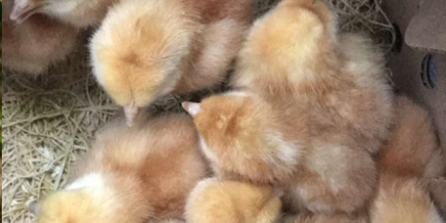
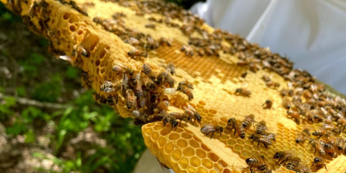
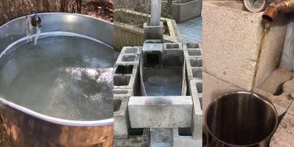
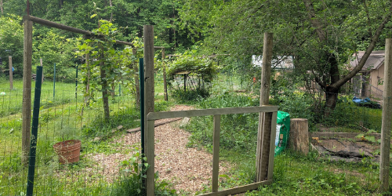

Chickens: Our flock of happy hens provides us with fresh, organic eggs daily. Each chicken is lovingly cared for, ensuring they live healthy and contented lives. Read More
Welcome to our little corner of the web, where we celebrate the joys of backyard farming and community spirit! Allow us to introduce John and Tracie Montville, the heart and soul behind our thriving backyard farm.
John and Tracie Montville are dedicated backyard farmers with a passion for sustainable living and community engagement. Nestled in a serene corner of Bainbridge Township, their farm is a bustling hub of activity and love.

Chickens: Our flock of happy hens provides us with fresh, organic eggs daily. Each chicken is lovingly cared for, ensuring they live healthy and contented lives. Read More

Bees: Our bees are busy pollinating the garden and producing delicious, golden honey. We are committed to maintaining a healthy environment for our bees, understanding their crucial role in our ecosystem. Read More

Maple Syrup: In addition to our other farming activities, we also produce our own maple syrup. Tapping our maple trees and collecting the sap is a labor of love that results in pure, delicious syrup that we enjoy sharing with our community. Read More

Garden: Our large garden is a testament to our dedication to homegrown produce. From vibrant vegetables to fragrant herbs, we cultivate a variety of plants that nourish our family and friends. Read More
Beyond our farming endeavors, we are proud to share the joy and comfort provided by our two golden retrievers, Rosie and Woody. These gentle souls are certified therapy dogs, bringing smiles and calm to everyone they meet.
Our therapy dogs also make regular appearances at bus stops around our neighborhood, where they greet children with wagging tails and warm hearts. This simple act helps ease any anxiety and sets a cheerful tone for the school day ahead.